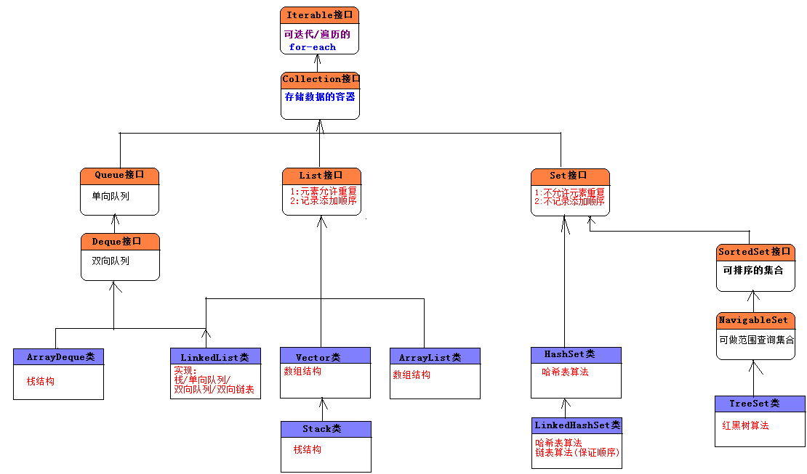

HashSet类
Set是Collection子接口，模拟了数学上的集的概念。
-----------------------------------------------------------------------
Set集合存储特点:
1):不允许元素重复.
2):不会记录元素的先后添加顺序.
-----------------------------------------------------------------------
Set只包含从Collection继承的方法，不过Set无法记住添加的顺序，不允许包含重复的元素。当试图添加两个相同元素进Set集合，添加操作失败，add()方法返回false。
Set判断两个对象是否相等用equals,而不是使用==。也就是说两个对象equals比较返回true，Set集合是不会接受这个两个对象的。
在一般的数组中,元素在数组中的索引位置是随机的,元素的取值和元素的位置之间不存在确定的关系,因此,在数组中查找特定的值时,需要把查找值和一系列的元素进行比较.
此时的查询效率依赖于查找过程中所进行的比较次数.
-------------------------
如果元素的值(value)和在数组中的索引位置(index)有一个确定的对应关系(hash).
公式为: index = hash(value);
那么对于给定的值,只要调用上述的hash(value)方,就能找到数组中取值为value的元素的位置.
HashSet是Set接口最常用的实现类,顾名思义,底层才用了哈希表(散列/hash)算法.
其底层其实也是一个数组,存在的意义是提供查询速度,插入速度也比较快,但是适用于少量数据的插入操作.
在HashSet中如何判断两个对象是否相同问题:
1):两个对象的equals比较相等. 返回true,则说明是相同对象.
2):两个对象的hashCode方法返回值相等.
对象的hashCode值决定了在哈希表中的存储位置.
二者:缺一不可.
当往HashSet集合中添加新的对象的时候,先回判断该对象和集合对象中的hashCode值:
1):不等: 直接把该新的对象存储到hashCode指定的位置.
2):相等: 再继续判断新对象和集合对象中的equals做比较.
1>:hashCode相同,equals为true: 则视为是同一个对象,则不保存在哈希表中.
1>:hashCode相同,equals为false:非常麻烦,存储在之前对象同槽为的链表上(拒绝,操作比较麻烦).
对象的hashCode和equals方法的重要性:
每一个存储到hash表中的对象,都得提供hashCode和equals方法,用来判断是否是同一个对象.
存储在哈希表中的对象,都应该覆盖equals方法和hashCode方法,并且保证equals相等的时候,hashCode也应该相等.
LinkedHashSet类
List接口: 允许元素重复,记录先后添加顺序.
Set接口: 不允许元素重复,不记录先后添加顺序.
需求: 不允许元素重复,但是需要保证先后添加的顺序.
LinkedHashSet:底层才有哈希表和链表算法.
哈希表:来保证唯一性,.此时就是HashSet,在哈希表中元素没有先后顺序.
链表: 来记录元素的先后添加顺序.
TreeSet类
TreeSet集合底层才有红黑树算法,会对存储的元素默认使用自然排序(从小到大).
注意: 必须保证TreeSet集合中的元素对象是相同的数据类型,否则报错.
----------------------------------------------------------------------------------------------
TreeSet的排序规则:
自然排序(从小到大):
TreeSet调用集合元素的compareTo方法来比较元素的大小关系,然后讲集合元素按照升序排列(从小到大).

覆盖 public int compareTo(Object o)方法,在该方法中编写比较规则.
在该方法中,比较当前对象(this)和参数对象o做比较(严格上说比较的是对象中的数据,比如按照对象的年龄排序).
this > o: 返回正整数. 1
this < o: 返回负整数. -1
this == o: 返回0. 此时认为两个对象为同一个对象.
--------------------------------------
在TreeSet的自然排序中,认为如果两个对象做比较的compareTo方法返回的是0,则认为是同一个对象.
--------------------------------------
定制排序(从大到小,按照名字的长短来排序):
在TreeSet构造器中传递java.lang.Comparator对象.并覆盖public int compare(Object o1, Object o2)再编写比较规则.
--------------------------------------
对于TreeSet集合来说,要么使用自然排序,要么使用定制排序.
判断两个对象是否相等的规则:
自然排序: compareTo方法返回0;
定制排序: compare方法返回0;


Set接口的实现类:
共同的特点:
1):都不允许元素重复.
2):都不是线程安全的类.
解决方案:Set s = Collections.synchronizedSet(Set对象);
-----------------------------------------------------------------------------------------
HashSet: 不保证元素的先后添加顺序.
底层才有的是哈希表算法,查询效率极高.
判断两个对象是否相等的规则:
1):equals比较为true.
2):hashCode值相同.
要求:要求存在在哈希中的对象元素都得覆盖equals和hashCode方法.
LinkedHashSet:
HashSet的子类,底层也采用的是哈希表算法,但是也使用了链表算法来维持元素的先后添加顺序.
判断两个对象是否相等的规则和HashSet相同.
因为需要多使用一个链表俩记录元素的顺序,所以性能相对于HashSet较低.
一般少用, 如果要求一个集合既要保证元素不重复,也需要记录添加先后顺序,才选择使用LinkedHashSet.
TreeSet:不保证元素的先后添加顺序,但是会对集合中的元素做排序操作.
底层才有红黑树算法(树结构,比较擅长做范围查询).
TreeSet要么才有自然排序,要么定制排序.
在比较器中覆盖compare方法,并编写比较规则.
TreeSet判断元素对象重复的规则:
compareTo/compare方法是否返回0.如果返回0,则视为是同一个对象.
-----------------------------------------------------------------------------
HashSet做等值查询效率高,TreeSet做范围查询效率高.
而我们更多的情况,都是做等值查询, 在数据库的索引中做范围查询较多,所以数结构主要用于做索引,用来提高查询效率.
Map
映射的数学解释:
设A、B是两个非空集合，如果存在一个法则f，使得对A中的每个元素a，按法则f，在B中有唯一确定的元素b与之对应，则称f为从A到B的映射，记作f：A→B。
-------------------------------------------------------------
映射关系(两个集合):A集合和B集合.
A集合中的每一个元素都可以在B集合中找到唯一的一个值与之对应.
-------------------------------------------------------------
严格上说,Map并不是集合,而是两个集合之间的映射关系(Map接口并没有继承于Collection接口),然而因为Map可以存储数据(每次存储都应该存储A集合中以一个元素(key),B集合中一个元素(value)),我们还是习惯把Map也称之为集合.
-------------------------------------------------------------
因为:Map接口并没有继承于Collection接口也没有继承于Iterable接口,所以不能直接对Map使用for-each操作.
发现在Map和Set中有很多相类似的实现类名:
Set Map 算法
--------------------------------------------------------------------------
HashSet HashMap 哈希表
TreeSet TreeMap 红黑树
LinkedHashSet LinkedHashMap 哈希表/链表
等...
--------------------------------------------
如果集合前缀相同,说明底层算法是一样的,现在单独使用HashSet和HashMap来研究.
通过阅读源代码:发现,相同算法的Set底层用的是相同算法的Map.
把Set的集合对象作为Map的key,再使用一个Object常量最为value.
因此:更符合我们说的在Map中,所有的key就是一个Set集合.
Map的常用实现类:
HashMap: 采用哈希表算法, 此时Map中的key不会保证添加的先后顺序,key也不允许重复.
key判断重复的标准是: key1和key2是否equals为true,并且hashCode相等.
TreeMap: 采用红黑树算法,此时Map中的key会按照自然顺序或定制排序进行排序,,key也不允许重复.
key判断重复的标准是: compareTo/compare的返回值是否为0.
LinkedHashMap: 采用链表和哈希表算法,此时Map中的key会保证先后添加的顺序,key不允许重复.
key判断重复的标准和HashMap中的key的标准相同.
Hashtable: 采用哈希表算法,是HashMap的前身(类似于Vector是ArrayList的前身).打死不用.
在Java的集合框架之前,表示映射关系就使用Hashtable.
所有的方法都使用synchronized修饰符,线程安全的,但是性能相对HashMap较低.
Properties: Hashtable的子类,此时要求key和value都是String类型.
用来加载资源文件(properties文件(IO再讲)).
--------------------------------------------------------------------------------------
一般的,我们定义Map,key都使用不可变的类(String),把key作为value的唯一名称.
--------------------------------------------------------------------------------------
HashMap和TreeMap以及LinkedHashMap都是线程不安全的,但是性能较高:
解决方案: Map m = Collections.synchronizedMap(Map对象);
Hashtable类实现线程安全的,但是性能较低.
哈希表算法:做等值查询最快.
数结构算法:做范围查询最快-->应用到索引上.
选用哪一种容器取决于每一种容器的存储特点以及当前业务的需求:
List: 单一元素集合.
允许元素重复/记录元素的添加顺序.
Set:单一元素集合.
不允许元素重复/不记录元素的添加顺序.
既要不重复,又要保证先后顺序:LinkedHashSet.
Map: 双元素集合. 如果存储数据的时候,还得给数据其为一个的一个名称,此时考虑使用Map.
--------------------------------------------------------------------------------
List和Set以及Map之间相互转换问题:
List<String> list = new ArrayList<>();
把List转换为Set:
Set<String> set = new HashSet<>(list);//此时会消除重复的元素.
把Set转换为List:
List<String> list2 = new ArrayList<>(set );
Map不能直接转换为List或Set(但是Map中的方法可以间接转换).

Map在以后运用的非常广泛:比如可以表示JavaBean对象,可以做缓存(工具箱).
JavaBean对象: 多对,属性名=属性值 (PS:属性名表示字段名)
Map对象:每一个key-value就好比是一对属性名=属性值.
把Map对象转换为JavaBean对象,把JavaBean对象转换为Map对象.
---------------------------------------------------------------------------------------------
Set,List,Map三种集合并不是都一直是单独使用的,偶尔也会综合使用.
List<Map<String,Object>> list = new ArrayList<>();

集合操作的工具类:
1):Arrays类:
2):Collections类.
---------------------------------------------------
Arrays类:
在Collection接口中有一个方法叫toArray把集合转换为Object数组.
把集合转换为数组: Object[] arr = 集合对象.toArray();
数组也可以转换为集合(List集合):
public static <T> List<T> asList(T... a) 等价于public static <T> List<T> asList(T[] a).
通过Arrays.asList方法得到的List对象的长度是固定的,不能增,也不能减.
为什么: asList方法返回的ArrayList对象,不是java.util.ArrayList而是Arrays类中的内部类对象.


面试题:Collection和Collections的区别.
1.java.util.Collection 是一个集合接口。
它提供了对集合对象进行基本操作的通用接口方法。Collection接口在Java 类库中有很多具体的实现。Collection接口的意义是为各种具体的集合提供了最大化的统一操作方式。
以下接口实现了Collection接口：
map，set，list，vector
2.java.util.Collections 是一个包装类。
它包含有各种有关集合操作的静态多态方法。此类不能实例化，就像一个工具类，服务于Java的Collection框架。
Collections类:封装了Set,List,Map的操作的工具方法.
获取空集对象(没有元素的集合,注意集合不为null):
常用的集合类:
HashSet/ArrayList/HashMap都是线程不安全的,在多线程环境下不安全.
在Collections类中有获取线程安全的集合方法:
List list = Collections.synchronizedList(new ArrayList());
当要做迭代的时候得使用synchronized.
synchronized(list) {
TODO
}
-----------------------------------------------------------------------------------
Set set = Collections.synchronizedSet(new HashSet());
Map map = Collections.synchronizedMap(new HashMap());
-----------------------------------------------------------------------------------